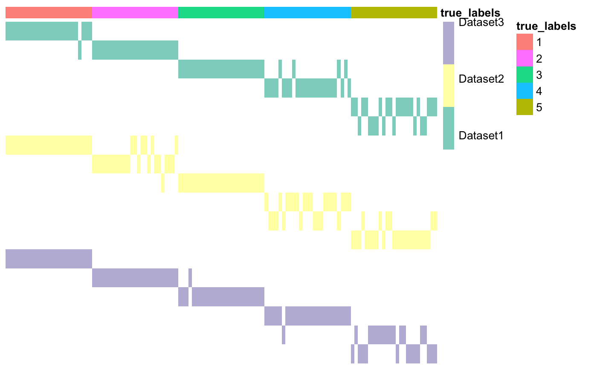

This function creates a matrix of clusters, starting from a list of heterogeneous datasets.
plotMOC( moc, datasetIndicator, datasetNames = NULL, annotations = NULL, clr = FALSE, clc = FALSE, save = FALSE, fileName = "moc.png", showObsNames = FALSE, showClusterNames = FALSE, annotation_colors = NA )
| moc | Matrix-Of-Clusters of size N x sumK. |
|---|---|
| datasetIndicator | Vector containing integers indicating which rows correspond to some clustering of the same dataset. |
| datasetNames | Vector containing the names of the datasets to which each column of labels corresponds. If NULL, datasetNames will be the same as datasetIndicator. Default is NULL. |
| annotations | Dataframe containing annotations. Number of rows must be N. If the annotations are integers, use `as.factor()` for a better visual result. |
| clr | Cluster rows. Default is FALSE. |
| clc | Cluster columns. Default is FALSE. |
| save | Boolean. If TRUE, plot is saved as a png file. |
| fileName | File name for the plot if save is TRUE. Default is 'moc.png'. |
| showObsNames | Boolean. If TRUE, the plot will also include the column names (i.e. name of each observation). Default is FALSE, since there are usually too many columns. |
| showClusterNames | Boolean. If TRUE, plot cluster names next to corresponding row. Default is FALSE. |
| annotation_colors | Optional. See annotation_colors in pheatmap::pheatmap. |
invisible(0)
The Cancer Genome Atlas, 2012. Comprehensive molecular portraits of human breast tumours. Nature, 487(7407), pp.61–70.
## Load data data <- list() data[[1]] <- as.matrix(read.csv(system.file('extdata', 'dataset1.csv', package = 'coca'), row.names = 1)) data[[2]] <- as.matrix(read.csv(system.file('extdata', 'dataset2.csv', package = 'coca'), row.names = 1)) data[[3]] <- as.matrix(read.csv(system.file('extdata', 'dataset3.csv', package = 'coca'), row.names = 1)) ## Build matrix of clusters outputBuildMOC <- buildMOC(data, M = 3, K = 6, distances = 'cor') ## Extract matrix of clusters and dataset indicator vector moc <- outputBuildMOC$moc datasetIndicator <- outputBuildMOC$datasetIndicator ## Prepare annotations true_labels <- as.matrix(read.csv( system.file('extdata', 'cluster_labels.csv', package = 'coca'), row.names = 1)) annotations <- data.frame(true_labels = as.factor(true_labels)) ## Plot matrix of clusters plotMOC(moc, datasetIndicator, annotations = annotations)